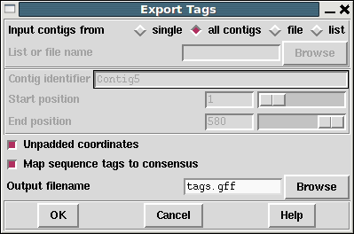

This dialogue allows annotations ("tags") to be written to disk as a GFF version 3 file.
Currently this just uses the GFF "remark" type, but future plans will be to support a more wide variety of GFF types.

By default the coordinates generated are de-padded, such that "*"s in the consensus sequence are not counted when identifying the coordinate of an annotation. This may be disabled by deselecting the "Unpadded coordinates" checkbox.
The object a tag is attached to is typically the contig it is within, with the contig name being used in the first column of the GFF file. This applies even for annotations place on a sequence rather than the consensus. This feature may also be disabled by deselecting the "Map sequence tags to consensus" checkbox.
Example GFF output follows, with "..." to denote lines truncated for illustrative purposes.
Contig6 gap5 remark 4745 4745 . . . type=COMM;Note=Possible SNP? Contig2 gap5 remark 3178 3196 . . . type=OLIG;Note=Template%09xb63f10%0AOligoname%09??%0A...
Note we can see URL style percent encoding being used to avoid GFF format metacharacters, as per the GFFv3 specification.